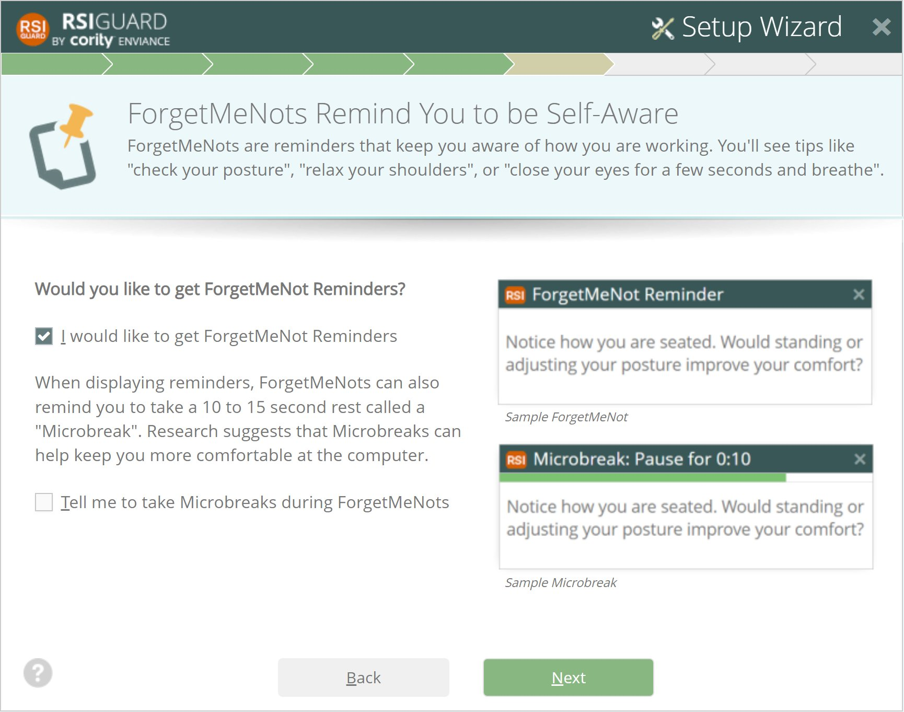

In addition to longer breaks, more frequent short microbreaks may help reduce stress, improve concentration, restore circulation, and reduce discomfort. The RSIGuard's ForgetMeNot feature offers microbreaks with reminder messages that are focused on building self-awareness. That self-awareness can help you modify behavior, for example, to change poor or fixed postures, or to be less stressed.
Setup tips:
